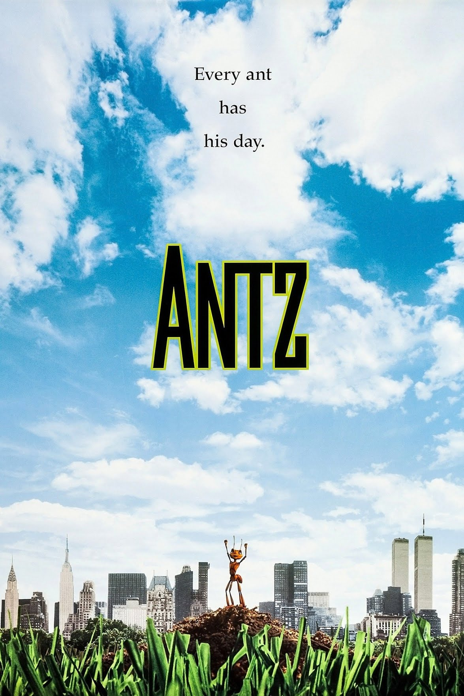
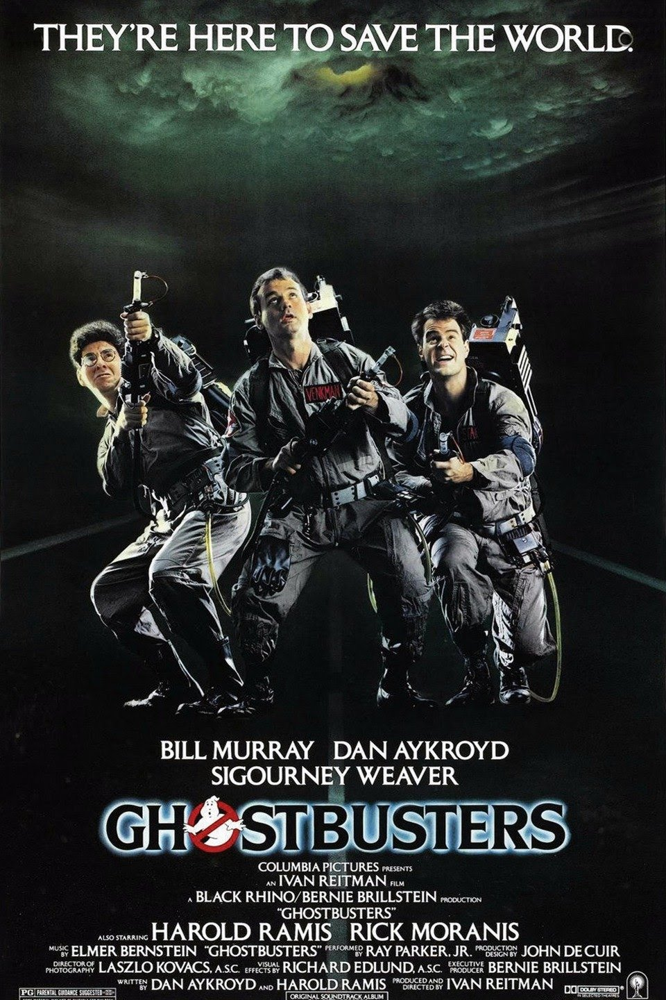

Destinos que tienes que visitar

Londres
visité este lugar en Noviembre de 2014
Londres (en inglés, London, pronunciado /ˈlʌndən/ ( escuchar)) es la capital y mayor ciudad del Reino Unido

Paris
visité este lugar en enero de 2019
Paris is the capital and most populous city of France, with an estimated population of 2,761,632 residents in 2019 in an area of more than 105 km²
Resena de peliculas
Antz

Excelente pelicula de la vida de hormigas
Esta pelicula es de la vida dentro de las hormigas de como viven y que comen y sus estrategias de planear
Avatar
sobre aliendijenas que sobreviven contra los humanos
Avatar: The Way of Water is a 2022 American epic science fiction film directed and produced by James Cameron. He co-wrote the screenplay with Rick Jaffa and Amanda Silver from a story the trio wrote with Josh Friedman and Shane Salerno.
Ghostbusters

sobre aliendijenas que sobreviven contra los humanos
Ghostbusters is a 1984 American supernatural comedy film directed and produced by Ivan Reitman, and written by Dan Aykroyd and Harold Ramis.